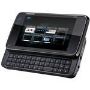
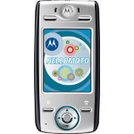
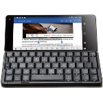
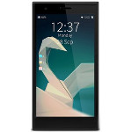
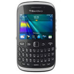
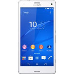

Nokia N900∗ 介紹
∗ 充電LED
∗ 終極改造
∗ 感測器位置
∗ Voltage Table
∗ 製作UART、USB接頭
∗ 連接PS SixAxis手把
∗ 開啟工程模式(RD Mode)
∗ 自製遊戲手把(A320機架)
∗ 自製遊戲手把(A380機架)
∗ 連接USB轉UART(PL-2303)
∗ 改造電池(3.7V 3150mA電池)
∗ 連接USB RJ-45網卡(QF9700)
∗ 連接PocketJet200熱感印表機
∗ 自製遊戲手把(PS SixAxis手把)
∗ Mugen Power 3.7V 2400mA電池
∗ 關閉Watchdog、Life Guard Reset
⊕ Maemo
∗ 超頻
∗ Git操作
∗ 擷取畫面
∗ 安裝系統
∗ 安裝Tmux
∗ 安裝等化器
∗ 自訂Vimrc
∗ 安裝GCC 4.6
∗ 定義鍵盤組合鍵
∗ 重新格式化分區
∗ 自訂Xbindkeys
∗ 更新Repository
∗ 切換USB Host模式
∗ X Terminal快速鍵
∗ 連接Dummy Network
∗ MyDocs格式化成ext3
∗ X Terminal Scrollback
∗ u-boot-update-bootmenu.sh
∗ 如何玩Freeciv
∗ 如何玩OpenTTD
∗ 如何玩Bos Wars
∗ 如何控制振動馬達
∗ 如何玩Widelands
∗ 如何查看電池百分比
∗ 如何玩ASCII Portal
∗ 如何玩星海爭霸1(StarCaft I)
∗ 如何玩魔獸爭霸2(WarCaft II)
∗ 如何在Pidgin上使用LINE聊天軟體
∗ 如何在Pidgin上使用Skype聊天軟體
∗ 如何在BackupMenu跳過某些備份資料夾
∗ 如何玩韋諾之戰(Battle of Wesnoth)
∗ 解決root空間不足的問題
∗ 解決xterm文字斷行的問題
∗ 解決VNC Screen Off問題
∗ 解決Google Pinyin啟動問題
∗ 解決CPU Usage問題(tracker)
∗ 解決/dev/ttyS2無法使用的問題
∗ 解決VIM無法使用Backspace的問題
∗ 解決Ctrl + Backspace失效的問題
∗ 解決"make (parser.h) broken pipe"的問題
∗ 解決CPU Usage問題(/usr/bin/Xorg -logfile)
∗ 解決PSX4M"...permission to keys file"問題
∗ 解決PSX4M"Could not open touchscreen"問題
∗ 解決"sshd: no hostkeys available exiting"問題
∗ 解決"Error opening terminal: xterm-256color"問題
∗ 解決"uv__fs_utime: undefined reference to futimens、utimensat"問題
∗ build as31
∗ build gputils
∗ build pyserial
∗ build bison 3.5
∗ build stcgal 1.4
∗ build autocutsel
∗ build setuptools 2.0.2
⊕ SBox
∗ 架設環境
∗ build vim
∗ build psx4all
∗ build gngeo 0.7
∗ build gngeo 0.8
∗ build hugo 1.1.2
∗ build handy 0.90
∗ build dosbox 0.74
∗ build gpspm 3.1.7
∗ build gmenu2x 0.12
∗ build hatari 1.3.1
∗ build fceu 0.98.12
∗ build fceu 0.98.13
∗ build pcmanx 0.3.9
∗ build wargus 2.2.7
∗ build kernel(stock)
∗ build desmume 0.9.6
∗ build desmume 0.9.7
∗ build gpspmgui 3.1.6
∗ build sdl_ttf 2.0.11
∗ build picodrive 1.35
∗ build kernel(power53)
∗ build drnoksnes 1.3.4
∗ build pcsx rearmed 22
∗ build uboot 201507 rc2
∗ build ascii portal 1.2
∗ build pcsx rearmed 0.4
∗ build pcsx rearmed(github)
∗ 移植fceu-gui
∗ 移植gngeo 0.7
∗ 移植gngeo 0.8
∗ 移植hugo 1.1.2
∗ 移植bochs 2.6.6
∗ 移植fceu 0.98.13
∗ 移植gmenu2x 0.12
∗ 移植pcsx rearmed 22
∗ 解決"Screen Tearing"問題
∗ 解決"linux/bounds.h not found"
⊕ Easy Debian
∗ 架設環境(Debian 5)
∗ 架設環境(Debian 6)
∗ 架設環境(Debian 7)
∗ 架設環境(Debian 8)
∗ 移植qemu 2.4.0.1
∗ build qemu 2.4.0.1
∗ 分析Easy Debian(CLI)
∗ 分析Easy Debian(LXDE)
∗ build mipsel toolchain
∗ reverse qobi-wmhint-fix
∗ patch openscad 2012.05.26
∗ 如何在Pidgin上使用LINE聊天軟體
∗ 如何在Pidgin上使用Skype聊天軟體
⊕ Native Kali
∗ 安裝系統
∗ 如何從內部NAND開機
∗ build kernel 5.3.0
⊕ Native Debian
∗ 安裝系統
∗ battery calibration
⊕ Kernel 4.9.0
∗ 如何調整CPU最高頻率
∗ build kernel 4.9.0
⊕ Kernel 5.3.0
∗ 開機Log
∗ 自製電池顯示
∗ 設定螢幕背光
∗ 設定鍵盤背光
∗ 設定聲音配置
∗ 使用UART傳輸
∗ 自製設定Trayicon
∗ 關閉硬體充電指示燈
∗ 如何輸出VBUS電源
∗ 如何掛載MTD根目錄
∗ 如何調整CPU最高頻率
∗ 如何輸出Suspend訊息
∗ build kernel 5.3.0
∗ 如何透過USB存取SDCard
∗ 如何透過USB登入SSH、VNC
∗ 解決登入需要執行bash的問題
∗ 解決VNC下無法使用TAB的問題
∗ 實做Lock Key功能(Kernel)
∗ 解決Suspend被音量鍵喚醒的問題
∗ 解決VNC下無法使用Copy、Paste的問題
∗ 解決wlan0 randomized MAC address問題
∗ 實做自動調節屏亮度以及鍵盤背光功能(Kernel)
∗ 解決"unable to initialize libusb -99"問題
∗ 解決"Debian 8 ... public key is not available"問題
⊕ PostmarketOS
∗ 安裝系統
∗ 鍵盤組合鍵
∗ boot.scr
∗ i3wm conf
∗ 使用UART傳輸
∗ bootmenu.scr
∗ 如何從內部NAND開機
∗ build kernel 5.3.2
∗ 解決"make error 137"問題
∗ Pack uInitrd-postmarketos-stable
∗ Unpack uInitrd-postmarketos-stable
⊕ Maemo Leste
∗ 安裝系統

Motorola E680∗ 介紹

Gemini PDA 4G∗ 介紹
∗ 拆機
∗ 最佳組合
∗ 製作UART接線
⊕ Android
∗ Portrait顯示模式
∗ Flash Kernel Image(TWRP)
∗ Flash Kernel Image(MTK Tool)
∗ Flash Android 8.1(MTK Tool)
∗ Build Kernel 3.18.41
∗ Root Stock Android 7.1.1
∗ 備份NVRAM
∗ 解決待機耗電的問題
∗ 支援USB Prolific PL2303
∗ 使用ZFlasher AVR燒錄ATtiny85
∗ 使用ZFlasher STM32燒錄STM32F103
∗ 使用ArduinoDroid燒錄Arduino Uno
∗ 使用ArduinoDroid燒錄KTduino Nano
∗ 使用ArduinoDroid燒錄Arduino Micro
⊕ Termux
∗ build openocd
∗ build stm8flash
∗ build bison 3.2
∗ build sdcc 3.8.0
∗ build avrdude 6.3
∗ build texinfo 6.5
∗ build libusb-1.0.0
∗ build libboost 1.61.0
∗ build gputils 1.5.0-1
∗ build avr binutils 2.31
∗ symbolic /system/bin /bin
∗ 安裝gcc-8
∗ 使用minicom做UART傳輸
∗ 使用avrdude燒錄ATtiny85
∗ 使用openocd燒錄STM32F103
∗ 使用stm8flash燒錄STM8S103
∗ 使用stcgal燒錄STC15W4K56S4
∗ 從ArduinoDroid提取avr-as、avr-gcc
∗ 解決使用tsudo修改而無法使用user權限刪除的問題
⊕ Linux Deploy
∗ 安裝Debian 9
∗ Build Kernel 3.18.41
⊕ Debian
∗ 安裝系統
Blackberry Passport
∗ 介紹
∗ 關于PPSSPP設定
∗ Android的SDCard資料夾位置
∗ 如何打包成Bar檔案
∗ 如何安裝Simulator
∗ 如何安裝DebugToken
∗ 如何Sign *.Bar檔案
∗ 如何支援-std=c++11
∗ 如何透過SSH連線到手機
∗ 如何取得Core dump檔案
∗ 如何更換RetroArch的字型
∗ 如何禁止相機的自動對焦功能
∗ 如何透過Chrome安裝Bar檔案
∗ 如何得知目前App為何執行錯誤
∗ 如何安裝Bar檔案到Simulator
∗ 如何關閉Android App背景執行
∗ 如何使用內建的Screenshot功能
∗ 如何設定LD_LIBRARY_PATH變數
∗ 如何設定qcc預設使用gcc 4.8.3
∗ 如何讓App取得Bar檔案裡面的資源
∗ 如何安裝Google Play Service
∗ 如何透過GDB Debug Native App
∗ 如何修改Android應用程式的顯示字型大小
∗ 解決Music會無故停止播放的問題
∗ 解決安裝RetroArch卻沒有Core可以使用的問題
∗ 解決使用耳機聽音樂又剛好有人打電話進來的問題
∗ 解決"ntoarmv7-gcc: error: unrecognized option '-rdynamic'"的問題
∗ 解決"terminated SIGSEGV code=1...(/proc/boot/libcpp.so.4...)"的問題
⊕ Cascades (C/C++)
∗ 開發環境
∗ Hello, world!
⊕ Core Native (C/C++)
∗ 開發環境
⊕ SDL 1.2
∗ Hello, world!
∗ Surface
∗ Image
∗ Event
∗ Color
∗ Clip
∗ Fonts
∗ Keyboard
∗ Mouse
∗ KeyStates
∗ Sounds
∗ Timing
⊕ Screen Graphics Subsystem
∗ Application Development
∗ Build Term48
∗ Build SDL 1.2
∗ Build SDL_ttf 2.0.11
∗ Build SDL_image 1.2.12
∗ Build SDL_mixer 1.2.12
∗ Build PPSSPP 0.9.9
∗ Build libwebp-0.6.1
∗ Build freetype 2.4.0
∗ Build libmikmod 3.3.11.1
∗ 移植NXEngine(Cave Story)
Fujitsu F-07C
∗ 介紹
∗ 拆機
∗ USB腳位
∗ 更換主機板
∗ 製作USB傳輸線
∗ 使用NDSL Case
∗ 使用Zaurus Case
∗ 解決"Ctrl+Alt+P"問題
∗ Mugen Power 3.7V 3200mA電池
∗ 自製大容量電池(GPD Win 6700mA)
∗ 自製電源底座(小米5000mA行動電源)
∗ 自製電源底座(小米5000mA行動電源x2)
⊕ x86
∗ 安裝Win7
∗ 安裝Win8
∗ 超頻(CPU 1.2GHz)
∗ (原廠系統)英文語系
∗ (原廠系統)開啟遠端桌面連線
∗ 安裝Lubuntu
∗ 安裝Xubuntu
∗ 定義鍵盤符號(Xubuntu)
∗ 安裝Arch Linux(LXDE)
∗ 安裝Arch Linux(XFCE4)
∗ 安裝Debian 7.0(LXDE)
⊕ Debian 8.0
∗ 安裝LXDE介面
∗ Build Kernel 3.16
⊕ Debian 9.0
∗ 安裝LXDE介面
∗ 如何關閉Touchscreen
⊕ Symbian
∗ 如何傳送PDF檔案到手機
∗ 如何傳送MP3檔案到手機
∗ 如何在台灣使用已解鎖的F-07手機

Jolla Phone∗ 介紹
∗ Recovery Mode
∗ 如何備份系統
∗ 如何安裝sudo
∗ 如何安裝Warehouse
∗ 如何開啟Terminal
∗ 如何解決Terminal游標問題
∗ TOHKBD2電路圖
∗ 拆解TOHKBD2鍵盤
∗ 改善TOHKBD2鍵盤
∗ 安裝TOHKBD2鍵盤驅動程式
⊕ Debian 9
∗ 安裝系統
Blackberry Key2
∗ Screenshot
∗ 貨幣鍵設定成Ctrl鍵
Blackberry Priv
∗ Screenshot
∗ 如何設定Shift鍵成Ctrl鍵
Blackberry KEYone
∗ 好用的功能
∗ 如何設定Shift鍵成Ctrl鍵
∗ 如何調整PS1和PSP模擬器的遊戲畫面
Blackberry Passport Silver Edition
∗ 如何更換電池
∗ 改善的地方有哪些
Blackberry Q10
∗ 鍵盤腳位

Blackberry Curve9320∗ 介紹
∗ 擷取畫面
∗ 安裝系統
∗ 自動釋放記憶體
⊕ Java
∗ 開發環境
∗ Hello, world!
Motorola xt897
∗ 自製遊戲手把(8Bitdo)
LG Vu3 F300
∗ 自製遊戲手把(8Bitdo)
Samsung S6 Edge
∗ 官方鍵盤皮套
Samsung Note4
∗ Screenshot
∗ 自製遊戲手把(8Bitdo)
Samsung i415
∗ Build Kernel
∗ 自製遊戲手把(8Bitdo)

Sony Z3 Compact∗ 自製遊戲手把
SonyEricsson sk17i
∗ 自製遊戲手把(8Bitdo)
iPhone SE
∗ 解決Touch觸控壞掉耗電的問題
Sharp Aquos Pad SH-05G
∗ 系統效能調整
∗ RetroArch模擬器調整
小米Max
∗ 修改RetroArch模擬器的顯示字型
華為X2
∗ 修改RetroArch模擬器的OnScreen Gamepad位置